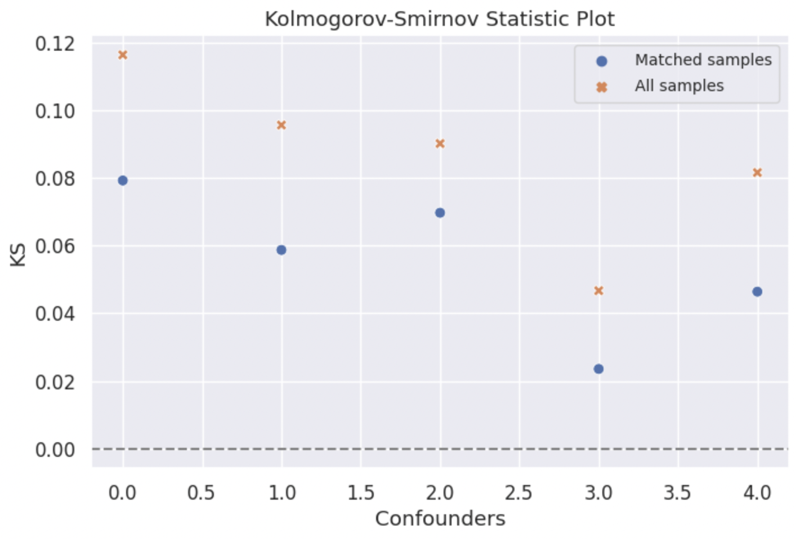
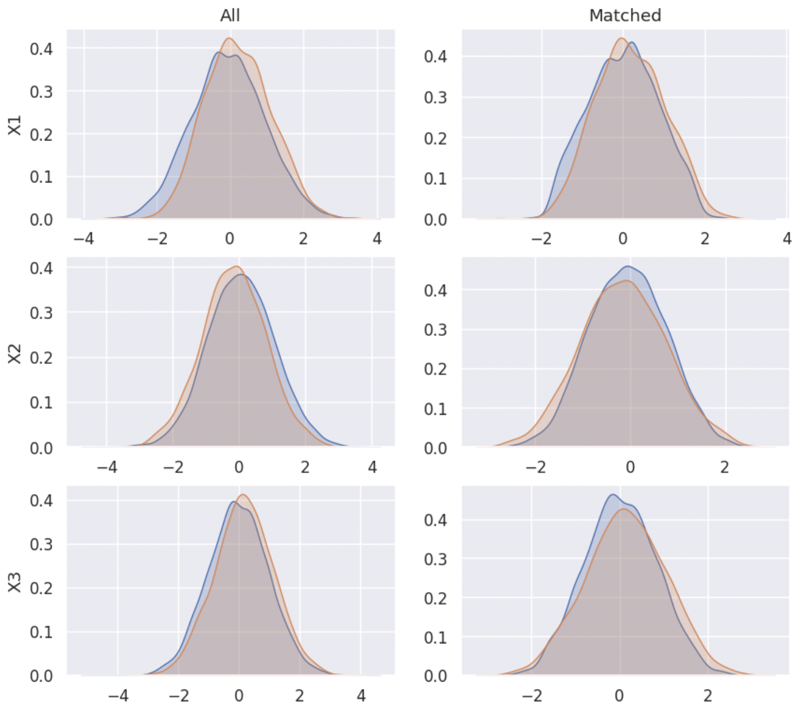
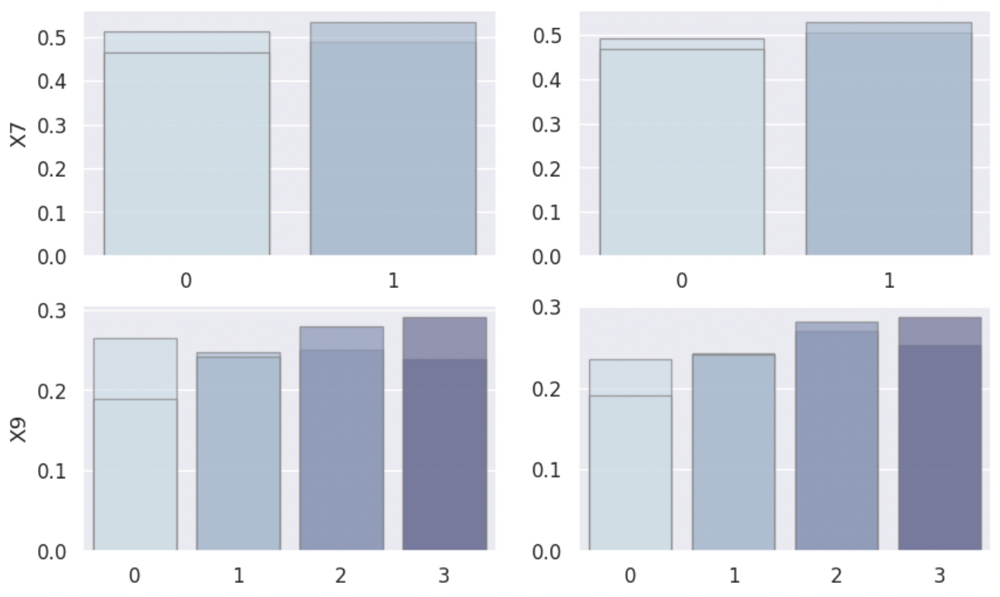

üîñ CEM Notebook Example - Simulated Linear Dataset¬∂
Here we provide a notebook example illustrating the usage of the CEM package with simulated dataset.
from CEM.balance import balance
from CEM.cem import cem
from CEM.data_generation import data_generation
from CEM.inference import inference
from CEM.sensitivity_analysis import *
1. Data preperation¶
The first step to prepare our dataset, and we can generate a simulated dataset with data_generation function, in which the result variable \(Y\) is linearly dependent with control variables \(X\) and treatment variable \(T\).
df = data_generation(n=10000, # sample size
p=0.2, # P(T=1)
att=3, # True average treatment effect on treated
x_cont=[0,1,6], # Generate 6 continuous variables X following the normal distribution N(0, 1).
x_cate=[2, 4, 4], # Generate 3 catigorical variables X with 2, 4, 4 categories respectively.
con_x=[(0, 3), (1, -2), (2, 1), (6, 2.5), (8, 1.5)] # X1, X2, X3, X7, X9 are confounders and
) # their effect on T are 3, -2, 1, 2.5, 1.5 resectively.
df.head()
2. Coarsened Exact Matching (CEM)¶
Firstly you should create your own cem , giving it your dataframe, column names of confounders, continuous confounders, result variable \(Y\) and treatment variable \(T\).
confounder_cols = ['X1','X2','X3','X7', 'X9']
cont_confounder_cols = ['X1','X2','X3']
my_cem = cem(df = df, # dataframe to be matched
confounder_cols = confounder_cols, # list of confounders' column names
cont_confounder_cols = cont_confounder_cols, # list of continuous confounders' column names
col_y = 'Y', # column name of result variable
col_t = 'T' # column name of treatment variable
)
The summary of the simulated dataframe is as follows.
Before matching the estimated ATT (Average Treatment Effect on Treated) is 1.0085, which is far from the true ATT 3.0.
my_cem.summary()
Descriptive Statistics of the dataframe:
X1 X2 X3 X4 X5 \
count 10,000.0000 10,000.0000 10,000.0000 10,000.0000 10,000.0000
mean -0.0160 0.0213 -0.0013 0.0001 -0.0144
std 0.9963 1.0065 0.9986 0.9955 0.9841
min -3.5670 -4.2668 -4.7132 -4.0806 -3.4952
25% -0.6865 -0.6595 -0.6691 -0.6720 -0.6779
50% -0.0231 0.0113 -0.0048 -0.0038 -0.0129
75% 0.6568 0.7026 0.6661 0.6730 0.6519
max 3.6061 3.7632 4.1706 3.9502 3.7476
X6 X7 X8 X9 T \
count 10,000.0000 10,000.0000 10,000.0000 10,000.0000 10,000.0000
mean -0.0016 0.4954 1.5062 1.4953 0.1533
std 1.0056 0.5000 1.1230 1.1172 0.3603
min -3.8068 0.0000 0.0000 0.0000 0.0000
25% -0.6853 0.0000 1.0000 0.0000 0.0000
50% -0.0034 0.0000 1.0000 2.0000 0.0000
75% 0.6783 1.0000 3.0000 2.0000 0.0000
max 4.5216 1.0000 3.0000 3.0000 1.0000
Y
count 10,000.0000
mean 6.4324
std 9.5579
min -29.9051
25% -0.0168
50% 6.3347
75% 12.9615
max 43.8527
Control group vs. Experimental group
n_samples mean_Y
0 8467 6.277839
1 1533 7.286350
T-test of Experimental group Y and Control group Y
att estimate (p-value): 1.0085(0.0001)
The difference between Experimental group Y and Control group Y is significant, and the difference is 1.0085.
Then we can try matching your dataset using match function with default parameters.
After the default coarsened exact matching, 82.84% treated samples are matched.
my_cem.match()
Matching result
all matched propotion
0 8467 3338 0.3942
1 1533 1270 0.8284
3. Balance Checking¶
Firstly you should create your own balance instance, giving it your matched dataframe, original dataframe, column names of confounders, continuous confounders, result variable \(Y\) and treatment variable \(T\).
Let’s check the L1 imbalance score after CEM with default coarsen parameters.
my_balance = balance(df_match = my_cem.matched_df, # matched dataframe
df_all = my_cem.df, # original dataframe
confounder_cols = my_cem.confounder_cols, # list of column names of confounders
cont_confounder_cols = my_cem.cont_confounder_cols, # list of column names of continuous confounders
col_y = 'Y', # column name of result variable
col_t = 'T') # column name of treatment variable
l1_before, l1_after = my_balance.balance_assessing(method = 'L1')
L1 imbalance score before matching: 0.6316
L1 imbalance score after matching: 0.2895
Moreover, we can customize our coarsen schema to optimize our matching result.
Method 1: You can input a schema dictionary indicating how to coarsen each continuous confounders \(X\) if you have a thorough understanding on your dataset.
The following cutting method can be chosen.
cut: Bin values into discrete intervals with the same length.qcut: Discretize variable into equal-sized buckets based on rank or based on sample quantiles.struges: Bin values into discrete intervals with the same length k according to the Sturges’ rule.
Method 2:
You can also use the tunning_schema function to help you tune the coarsen schema automatically.
The matched result with a suitable coarsen schema will have smaller L1 imbalance score and more matched samples.
Here we show the example of tunning_schema. Comparing with default coarsen schema, the L1 imbalance score after matching with tuned schema decreases from 0.2895 to 0.2591.
l1, schema = my_cem.tunning_schema(step = 4)
my_cem.match(schema = schema)
my_balance = balance(my_cem.matched_df, my_cem.df, my_cem.confounder_cols, my_cem.cont_confounder_cols)
my_balance.balance_assessing(method = 'all')
Matching result
all matched propotion
0 8467 5763 0.6806
1 1533 1431 0.9335
L1 imbalance score before matching: 0.434
L1 imbalance score after matching: 0.2591
-------------------------
SMD Result
Balance measures
Treated Mean Control Mean SMD Variance Ratio SMD.Threshold(<0.1) \
X1 0.1755 0.0924 0.0956 0.9329 Balanced
X2 -0.1462 -0.1407 -0.0062 1.0103 Balanced
X3 0.1375 0.1331 0.0049 0.9924 Balanced
X7 0.5304 0.5304 0.0000 . Balanced
X9 1.6660 1.6660 -0.0000 . Balanced
Var.Threshold(<2)
X1 Balanced
X2 Balanced
X3 Balanced
X7 .
X9 .
-------------------------
Balance tally for SMD
count
SMD.Threshold(<0.1)
Balanced 5
------------------------------
Variable with the max SMD:
SMD SMD.Threshold(<0.1)
X1 0.0956 Balanced
------------------------------------
Balance tally for Variance ratio
count
Var.Threshold(<2)
Balanced 3
-----------------------------------------
Variable with the max variance ratio:
Variance Ratio Var.Threshold(<2)
X2 1.0103 Balanced
-----------------------------------------

KS Result
{kind=link}
Density Plot
 {kind=link}
{kind=link}
ECDF Plot

4. Treatment Effect Inference¶
After conducting the coarsened exact matching and imbalance checking, we can estimate the average treatment effect ATT and heterogeneous treatment effect HTE with statistical inference methods.
Ordinal least square linear regression method
linear_attand weighted least square linear regression methodweighted_linear_attare provided for the ATT estimation.
Linear double machine learning method (Chernozhukov et al. 2017)
linear_dml_hteis provided for the HTE estimation.
Reference
Chernozhukov, V., Chetverikov, D., Demirer, M., Duflo, E., Hansen, C., Newey, W., & Robins, J. (2017). Double/debiased machine learning for treatment and causal parameters.
Firstly you should create your own inference instance, giving it your matched dataframe, column names of result variable \(**Y**\), treatment variable \(**T**\), control variables \(**X**\), and confounders.
With the weighted linear regression method and linear double machine learning method, the estimated ATT and CATE are 2.8786, 3.0653 respectively, which are much better than 1.0085.
my_inf = inference(df = my_cem.matched_df, # matched dataframe
col_y = 'Y', # column name of result variable
col_t = 'T', # column name of treatment variable
col_x = ['X4', 'X5', 'X6', 'X8'], # list of column names of control variables, please be noted that confounders should not be included in this list
confounder_cols = my_cem.confounder_cols) # list of column names of confounders
att = my_inf.weighted_linear_att()
print(f'att: {round(att, 4)}')
cate, hte, r2 = my_inf.linear_dml_hte()
print(f'cate: {round(cate, 4)}, r2:{round(r2, 4)}')
WLS Regression Results
==============================================================================
Dep. Variable: y R-squared: 0.704
Model: WLS Adj. R-squared: 0.704
Method: Least Squares F-statistic: 3420.
Date: Fri, 21 Jul 2023 Prob (F-statistic): 0.00
Time: 10:55:56 Log-Likelihood: -22394.
No. Observations: 7194 AIC: 4.480e+04
Df Residuals: 7188 BIC: 4.484e+04
Df Model: 5
Covariance Type: nonrobust
==============================================================================
coef std err t P>|t| [0.025 0.975]
------------------------------------------------------------------------------
const -2.5359 0.102 -24.891 0.000 -2.736 -2.336
T 2.8786 0.146 19.774 0.000 2.593 3.164
X4 -2.6487 0.059 -45.124 0.000 -2.764 -2.534
X5 3.6880 0.059 62.155 0.000 3.572 3.804
X6 3.1113 0.058 53.891 0.000 2.998 3.225
X8 4.7185 0.052 90.623 0.000 4.616 4.821
==============================================================================
Omnibus: 481.185 Durbin-Watson: 1.976
Prob(Omnibus): 0.000 Jarque-Bera (JB): 1254.094
Skew: -0.383 Prob(JB): 4.75e-273
Kurtosis: 4.896 Cond. No. 5.36
==============================================================================
Notes:
[1] Standard Errors assume that the covariance matrix of the errors is correctly specified.
att: 2.8786
cate: 3.0594, r2:0.0007
5. Sensitivity Analysis¶
When we conduct causal inference to the observational data, the most important assumption is that there is no unobserved confounding. Therefore, after finishing the treatment effect estimation, investigators are advised to examine how strong the effect of unobserved confounders should be to erase the treatment effect estimated.
5.1 Omitted variable bias based sensitivity analysis¶
In the following example, we choose \(X2\) as our benchmark variable. The analysis result gives us the following informations:
Robustness Value (RV):
It provides a convenient reference point to assess the overall robustness of a coefficient to unobserved confounders. If the confounder’s association to the treatment \(R_{Y\sim Z|T, X}^2\) and to the outcome \(R_{Z\sim T|X}^2\) are both assumed to be less than the \(RV\), then such confounders cannot “explain away” the observed effect.
Contour Line:
The points on the same contour line has the same adjusted estimated ATT. The contour line helps us to know the value of the adjusted estimated \(ATT\) when \(R_{Y\sim Z|T, X}^2 = a\) and \(R_{Z\sim T|X}^2 = b\).
Bound the strength of the hidden confounder using observed covariate:
We can choose an observed confounder \(X_j\) as a benchmark, and check the adjusted estimated \(ATT\) when
import statsmodels.api as sm
X = sm.add_constant(my_cem.matched_df[[my_cem.col_t] + [f'X{i}' for i in range(1, 10)]])
y = np.asarray(my_cem.matched_df[my_cem.col_y])
model = sm.WLS(y.astype(float), X.astype(float), weights=1)
my_ovb = ovb(model=model, bench_variable='X1', k_t = [0.2, 0.5], k_y=[0.2, 0.5], measure = 'att')
my_ovb.plot_result()
{kind=link}
5.2 Wilcoxon’s signed rank test based sensitivity analysis¶
Wilcoxon’s signed rank test based sensitivity analysis is suitable for 1-1 matched dataset, therefore 1-1 matching needs to be conducted firstly. You can implement it simply by setting k2k_ratio = 1, and here we choose the propensity score to measure the similarity by setting dist = 'psm'.
my_cem_k2k = cem(df, confounder_cols, cont_confounder_cols)
my_cem_k2k.match(k2k_ratio = 1, dist = 'psm')
Matching result
all matched propotion
0 8467 1270 0.1500
1 1533 1270 0.8284
The wilcoxon class function can give you a result table, which shows you the p-value intervals under each \(\Gamma\).
In the following example, when \(\Gamma = 4.25\), the upper bound of the p-value’s interval is greater than 0.05, which means that in this situation, we don’t have 95% confidence to reject the null hypothesis that the treatment is randomly assigned. In other words, when \(\Gamma = 4.25\) the estimated ATT will be explained away by unovserved confounders.
my_sen = wilcoxon(df=my_cem_k2k.matched_df, pair = my_cem_k2k.pair)
wilcoxon_df = my_sen.result([1, 2, 3, 4, 4.25, 5])
lower_p upper_p
gamma
1.00 0.0 0.0000
2.00 0.0 0.0000
3.00 0.0 0.0000
4.00 0.0 0.0112
4.25 0.0 0.0575
5.00 0.0 0.6223
The estimated ATT result is not reliable if there exists an unobservable confounder which makes the magnitude of probability
that a single subject will be interfered with is 4.25 times higher than that of the other subject.